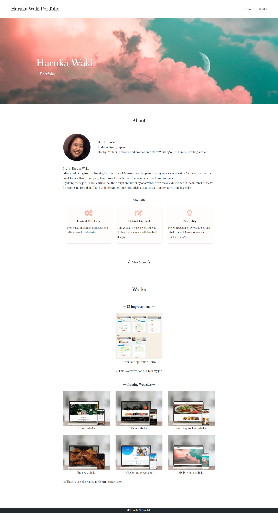

Works

- Overview
- My Portfolio Website
- Purpose
- To introduce my works.
- Target
- People who are looking for a UI/Web designer
- Theme Color
- Concept of Design
- I design it simple to emphasize the collection of my work.I like to keep changing. So I express myself by using he image of the sky.
- My Works
- Planning/Design/Coding
- Tools
- Photoshop/Illustrator
- Production Period
- 4 Days
- URL
- https://waki-h.github.io/myportfolio/
